◎ 1エリアの有志による懇親会・忘年会が2002年12月14日(土)、 東京・徒町の新潟郷土料理店「朱鷺(とき)」で開催。
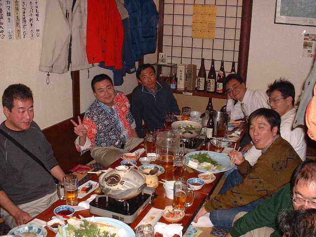
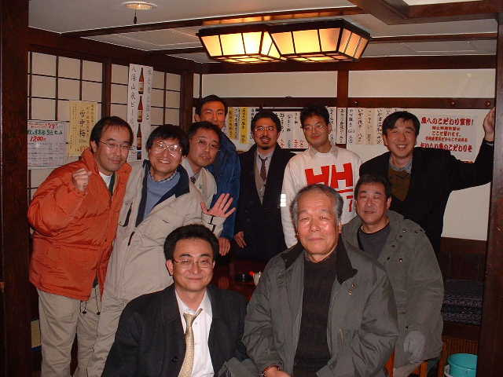
[JA7エリア]
◎ 南東北6m DXerの2002年忘年会は12月21日(土)、仙台市で開催。
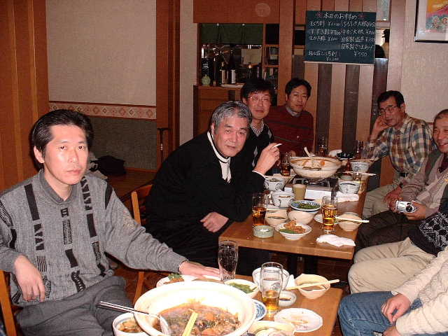
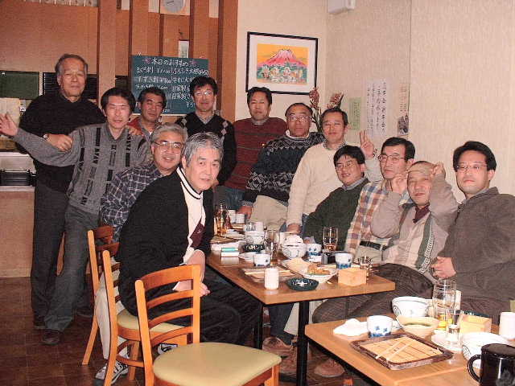
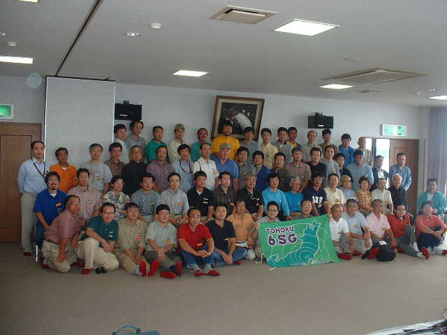
|
2002年9月14日(土）、15日(日)の両日「6mミーティング2002イン福島」
（副題・第31回東北6SGミーティング＆第32回VSG/第20回VCG全国大会）が福島県相馬市の「晴風荘」で開催された。 今年はVSG/VCG全国大会と例年6月に開催されている東北6SGミーティングのスケジュールを変更し両ミーティングを合同で開催する事になった。 今回のミーティングにはJA5、6、8からの参加者を除く71人が集まった。 14日(土)の懇親会は、定刻の午後6時半からJA7OWD・高平さんの総合司会で開始、 開会の言葉がJH7MQU・見山さんから、開催地を代表してJA7WSZ・浜名さんから歓迎の挨拶があった。 引き続き、最遠距離からの参加局となったJA4NOP・庄倉さんご夫妻による乾杯の音頭、 各エリアごとの自己紹介が行なわれた。 懇親会は、平行して行なわれた"豪華商品"の"全員外れクジなし"の抽選会に大いに盛り上がった。 二次会は各部屋に分散、"宴会の余韻"は日付が変わっても終わる事がなかった。 二次会場では、JL1IHE・加桶さんの7Q7JA(Malawi)運用のビデオ、 JI1NJC・飯塚さんからZK1NJC(North Cook)の運用ビデオなども紹介されていた。 翌15日(日)は午前9時からミーティングが大広間で開催された。 講演会はJH7OHF/1・小野さんからT2SIX、VK9MLのDXPeditionの模様がビデオを使って報告された。 続いてJA1RJU・小笠原から「6mのプロパゲーション」と題して、過去一年間の6mのコンデションの模様が報告された。 恒例の「ジャンク市」に続き、次期開催地が報告された。この結果、東北6SGは「青森県」に決定。 VSG/VCGの全国大会は立候補のエリアが無かったため、今後は各エリア"持ち回り方式"の見直しも考慮に入れ、 "グランドミーティング"の開催は再検討される事になった。 ミーティングは記念撮影の後、フォースのアンテナでお馴染みのEDC社(JA8CCL/1・木下氏)による、 6mのアンテナ・Force EF-606のデモが駐車場で行なわれ、正午過ぎに解散。
【 第31回東北6SGミーティング＆第32回VSG／第20回VCG全国大会参加者 】
JA1CJB JF1IRW JA2BNV JA7JH JA7WSZ JH7VEP JF7GDN JA9SSB
JA1DWQ JG1FEM JA2BZY JA7AGL JA7XBA JH7WCF JF7LGH JA0RNN
JA1RJU JI1NJC JR2HCB JA7AHK JH7BRY JH7XRZ JF7VLC JR0EQQ
JA1RTS JJ1LGO JE2PUC JA7CSS JH7DHS JR7AIW JI7NAI
JA1VOK JK1BEY JE2WLD JA7EIQ JH7LLE JR7EXS JI7NLL
JH1WHS JL1IHE JE2WLD/XYL JA7JWF JH7MQU JR7HKY JI7WTK *15日参加
JR1LZK JN1GTG JA3QVQ JA7KHQ JH7MSB JR7SIF JK7IKU JA8CCL/1
JE1CUS JN1JFC JA4NOP JA7MIT JH7OHF/1 JR7XGL JK7TKE/1
JE1FWO JO1PSX JA4NOP/XYL JA7OWD JH7QLS JE7GWN JK7OSL
JF1FDO JA5VBH/1 JA7QMH JH7UPW JE7HMZ JL7IWF
[文責/JA1RJU・小笠原]
|
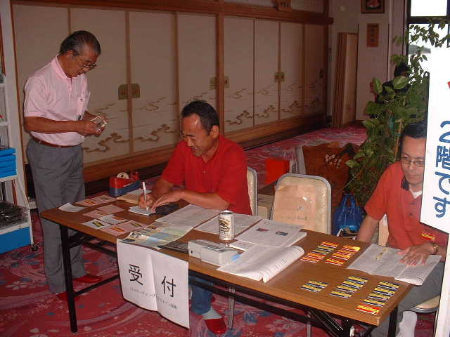
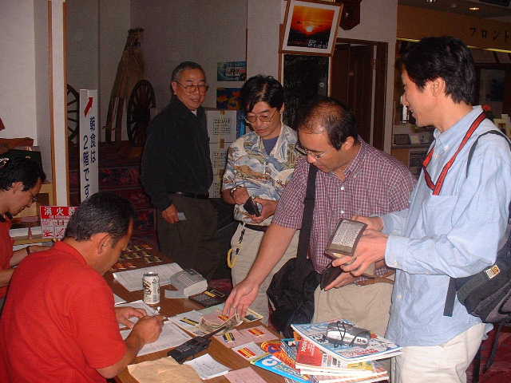
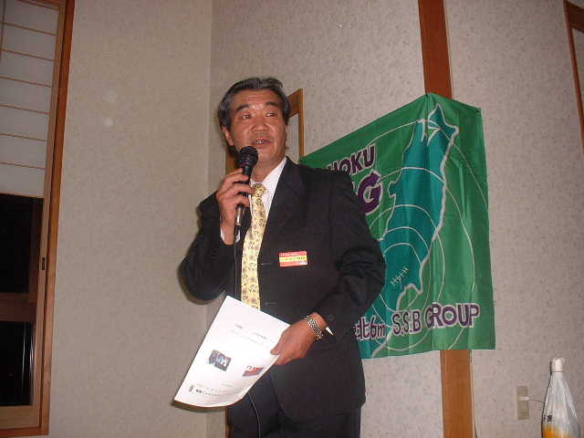
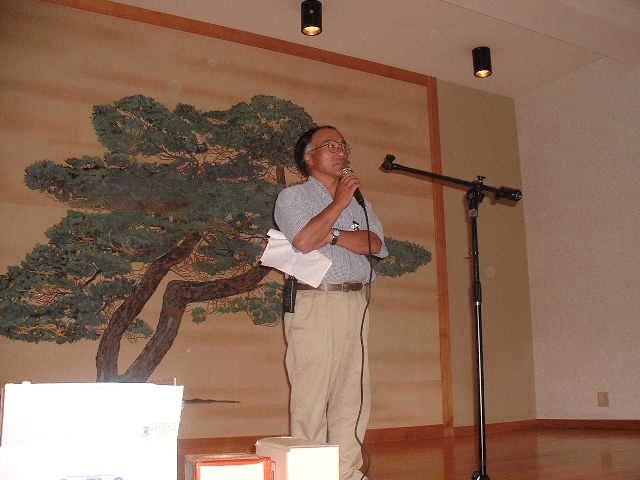
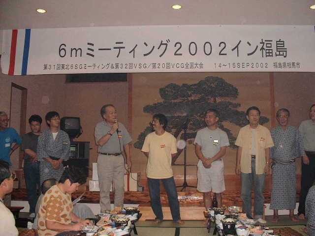
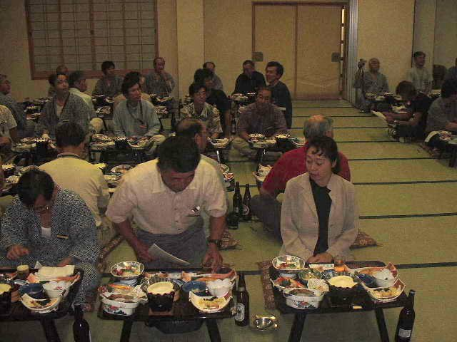
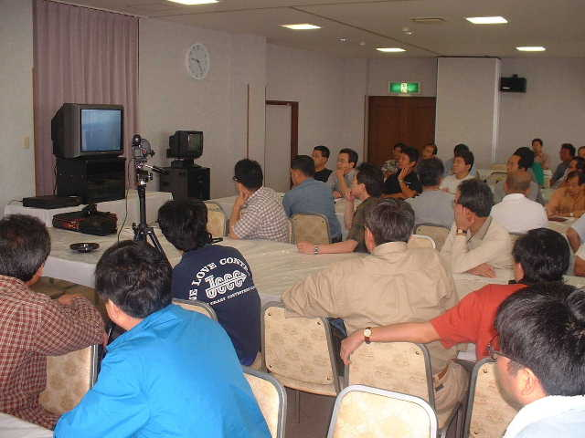
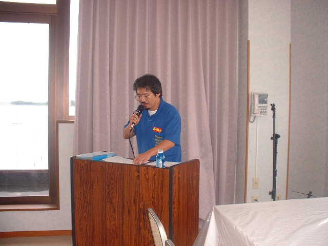
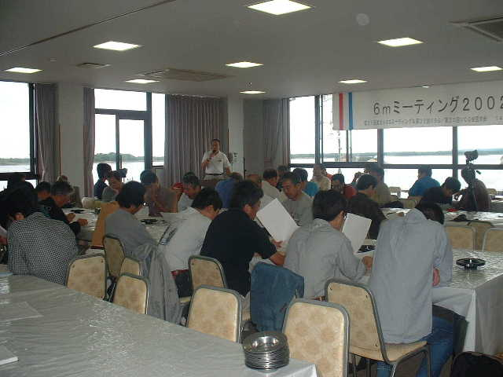
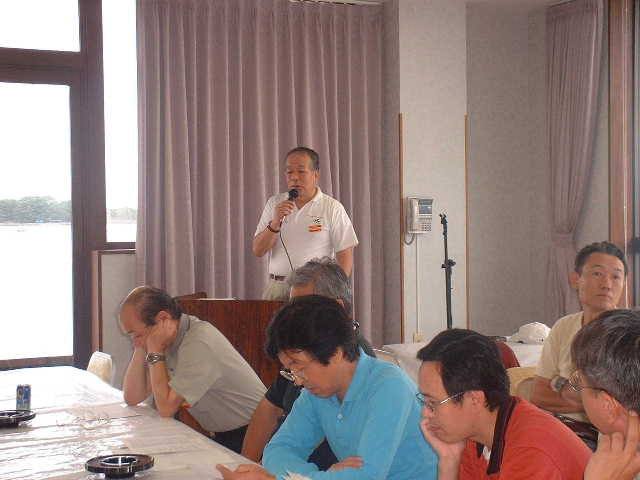
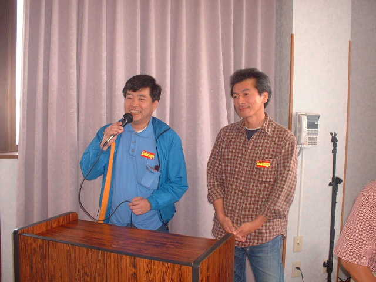
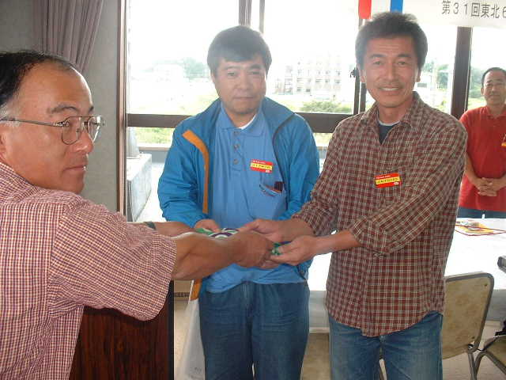
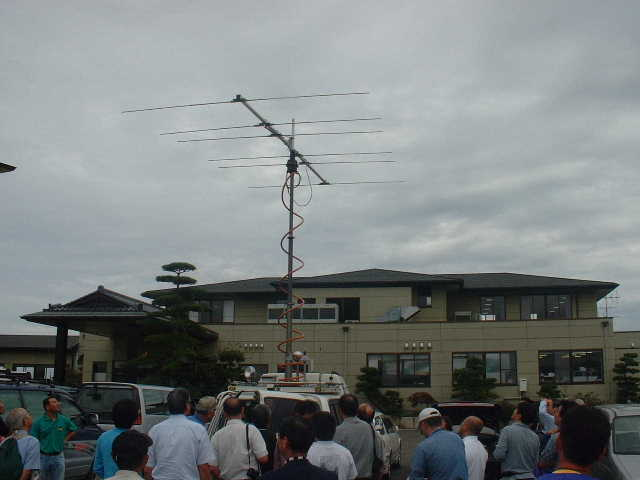
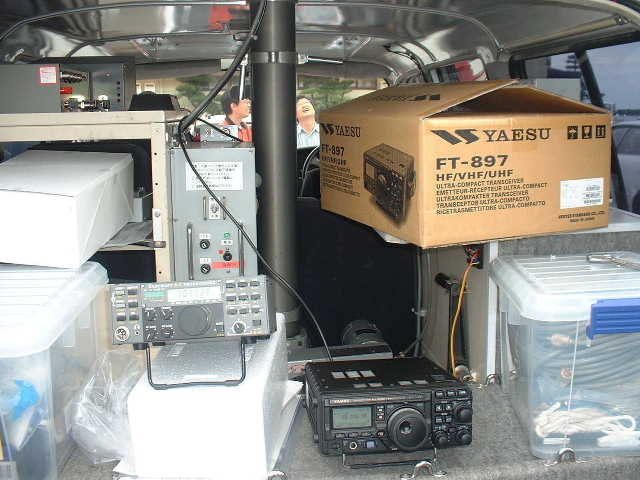
|
サイクル23の太陽活動もそろそろ下降線を描くと予想されておりましたが、昨年後半以来のFBなコンデションのお陰で、
歴史に残る数々のビッグオープンが記録されました。
また、国内に目を転じましても6mのJCC、JCGハント熱、更には各種コンテストに於いても6mは相変わらずの盛況ぶりです。 さて、下記の日程で「6mミーティング2002イン福島」（副題、第31回東北6SGミーティング＆第32回VSG/第20回VCG全国大会）を開催します。 一年間蓄積しておきました6mの話題を持ち寄り、楽しく過ごそうではありませんか。 どうぞ万障お繰り合わせの上、ご参加下さいます様、スタッフ一同心よりお待ちしております。
開催日: 2002年9月14日(土) 18時30分より懇親会
9月15日(日) 9時よりミーティング、12時解散予定
場 所: 福島県相馬市岩子字中島539-15
「晴風荘」http://homepage2.nifty.com/seifuuso/
TEL 0244-35-3289
参加費: 15,000円（懇親会及び宿泊)小学校以下の方は7,000円
1,000円(15日ミーティングのみ参加の方)
申込先: 郵便振替用紙に必要事項(コールサインと電話番号をお忘れなく)を記入の上お振込み下さい。
口座番号 02250-8-97464
口座名（加入者名） 6mミーティング2002
（入金確認後詳しい案内書と領収証をお送り致します。尚、途中キャンセルの場合はキャンセル
料金と事務手数料を差し引き、ミーティング終了後、返却致します）
締切日: 定員60名になり次第締め切りとさせて頂きます。
最終締切日 2002年7月14日(日)
お問合せは、JA7WSZ・浜名浩一 TEL 0244-23-4032へお願い致します。
※ご案内を全ての方にお送りするのは不可能ですので、どうかローカル各局とお誘い合わ
せの上、お早めにお申し込み下さい。
世話人代表 JA7WSZ 浜名 浩一
E-mail: ja7wsz@hotmail.com
|